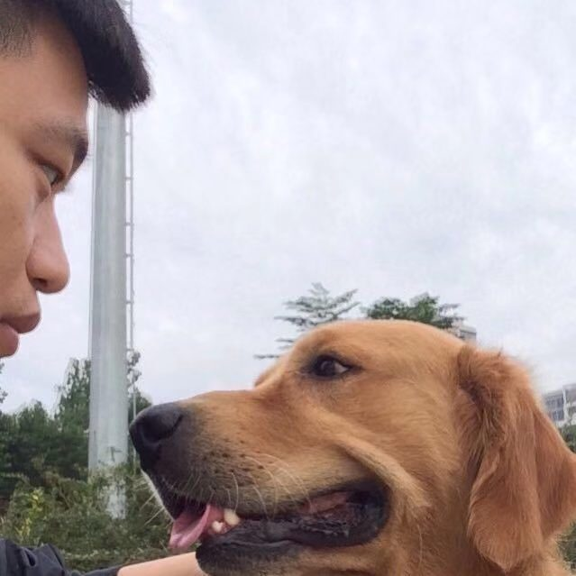

News
6 August 2022
Our Workshop paper "Debiased Outfit Compatibility Modeling with Counterfactual Inference" is accepted by ACM Multimedia.
29 June 2022
Our full paper "Counterfactual Reasoning for Out-of-distribution Multimodal Sentiment Analysis" is accepted by ACM Multimedia.
16 July 2021
Our full paper "Response Generation by Jointly Modeling Personalized Linguistic Stules and Emotions" is accepted by IEEE Transactions on Multimedia Computing Communications and Applications.
|  |
Teng Sun
Email: stbestforever AT gmail.com
|
Teng Sun received the master's degree in School of Computer Science and Technology from Shandong University, Shandong, in 2020. He is currently pursuing the Ph.D. degree with the School of Computer Science and Technology, Shandong University, under the supervision of L. Nie. His research interests include multimedia computing and information retrieval.
Education
| Shandong University Doctor in Computer Science and Technology, Sep. 2020 -- Supervisor: Prof. Liqiang Nie |
| Shandong University Master in Computer Science, Sep. 2017 - Jun. 2020 Advisor: Prof. Liqiang Nie |
Publications
In the Year of 2022:| Debiased Outfit Compatibility Modeling with Counterfactual Inference
Liqiang Jing, Minghui Tian, Xiaolin Chen, Teng Sun, Weili Guan, Xuemeng Song ACM Multimedia (Workshop) • Codes&Data |
| Counterfactual Reasoning for Out-of-distribution Multimodal Sentiment Analysis
Teng Sun, Wenjie Wang, Liqiang Jing, Yiran Cui, Xuemeng Song, Liqiang Nie ACM Multimedia (Full) • Codes&Data |
| Response Generation by Jointly Modeling Personalized Linguistic Stules and Emotions
Teng Sun, Chun Wang, Xuemeng Song, Fuli Feng, Liqiang Nie IEEE Trans. on Multimedia Computing Communications and Applications (Full) • Codes&Data |
Patent
|
A social media user privacy leak detection method, system, device and medium (substantive examination)
- Xuemeng Song, Xiaolin Chne, Ruiyang Ren, Teng Sun, Peiguang Jing & Lei Wang |
|
Intelligent identification method of single pointer sulfur hexafluoride instrument in substation CN201910319860.4
- Liqiang Nie, Tian Gan, Teng Sun,Xingang Zhan, Yiyang Yao & Zhao Zhang |
|
Detection and tracking method of hidden object in power transmission channel based on binocular vision CN202010103138.X
- Liqiang Nie, Xiaoyun Zheng, Yiyang Yao, Xingang Zhan, Teng Sun & Yinwei Wei |